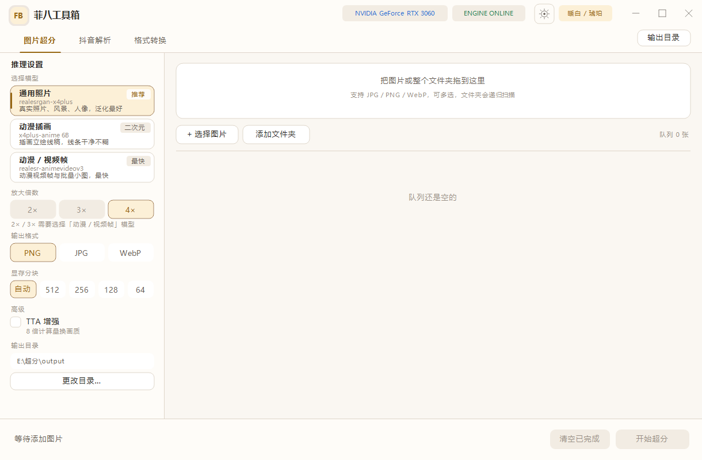

01 / 图片超分
把低清图片交给本机 GPU
内置通用照片、动漫插画和动漫视频帧三类模型，支持 2×、3×、4×、TTA 增强与显存分块。
- 拖入图片或整个文件夹，递归扫描子目录
- 对比视图支持拖动分割线和 1:1 像素检查
- JPG、PNG、WebP 输入，输出格式可切换
把下载、转换、超分放进一个桌面工具箱。
图片超分使用 Real-ESRGAN 在本机显卡推理；无水印解析支持抖音、小红书、快手； 媒体工具箱覆盖转换、压缩、音频、GIF、剪切、字幕、合并与短视频超分。

核心功能
不追求把所有工具堆在一起，而是把素材从平台、文件夹到成品的处理链路放在同一套界面里。
01 / 图片超分
内置通用照片、动漫插画和动漫视频帧三类模型，支持 2×、3×、4×、TTA 增强与显存分块。
02 / 无水印解析
程序启动 Edge 或 Chrome 打开作品页，通过 CDP 截获页面已经拿到的数据，不依赖第三方解析接口。
03 / 媒体工具箱
复用随包 FFmpeg 与 Real-ESRGAN，完成转换、压缩、音频提取、GIF、剪切、字幕、合并和视频超分。
完整工作流
菲八工具箱把原本分散在下载器、转码器、播放器和超分软件里的步骤串成一条连续路径。
粘贴分享文案，解析无水印视频或图文作品，也可以直接拖入本地图片和视频。
提取音频、转换格式、压缩体积，或者把长视频切成需要保留的片段。
图片和短视频走 Real-ESRGAN 超分，字幕、音轨与多个视频片段继续在队列中处理。
结果统一写入指定目录，任务完成后可直接打开文件夹定位成品。
隐私优先
图片超分全程本地推理；平台解析使用本机已安装的 Chromium 内核浏览器。官网和程序都不需要把素材发送到第三方解析服务器。
%LOCALAPPDATA%\FibaToolbox\browser\
下载
当前测试版为 v1.8.6-test。主程序轻量，安装包和便携版已经包含推理模型、FFmpeg 与 ncmdump。
创建桌面快捷方式和开始菜单项，可从 Windows 的“程序和功能”中卸载。
解压到独立目录即可运行，适合放到移动硬盘或在不同电脑之间携带。
包含原生 C / Win32 源码、编译脚本、测试工具和开发文档，适合审查与二次开发。
安装包和便携版发布到 GitHub Releases 后，对应按钮会指向发布页；源码版可直接下载当前 main 分支。
常见问题
下面是程序当前版本最容易遇到的问题和处理方式。
不会。图片超分使用本机 Vulkan 设备执行 Real-ESRGAN 推理，素材不经过云端服务。
请确认主程序与 ffmpeg\bin\ 位于同一目录。安装包和便携版已经包含完整运行时，不需要单独安装。
小红书通常要求登录后才能稳定获取作品详情。首次使用请点击“平台登录”，登录态会保存在本机专用浏览器 Profile 中。
第一次解析需要启动无头浏览器并等待页面接口返回。小红书和快手会在后续解析中复用热会话，通常会更快。
当前建议处理 3 分钟以内的视频。4× 超分会显著增加处理时间和临时磁盘占用，请先确认输出目录空间充足。
需要三平台解析和完整视频工具箱时使用 v1.8.6-test；更看重已长期验证的基线时，可以继续使用稳定版 v1.6.8。
本地处理，随时可用
下载 v1.8.6-test，体验从无水印解析到媒体输出的完整流程。